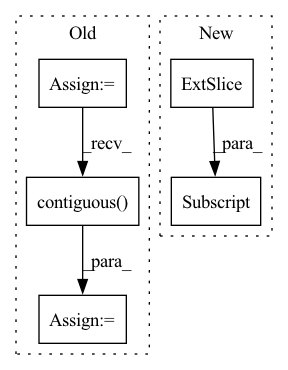

Pattern ID :32299

Before Change
def forward(self, x, rois, roi_indices):
roi_indices = torch.Tensor(roi_indices).float()
rois = torch.Tensor(rois).float()
if x.is_cuda:
roi_indices = roi_indices.cuda()
rois = rois.cuda()
indices_and_rois = torch.cat([roi_indices[:, None], rois], dim=1)
xy_indices_and_rois = indices_and_rois[:, [0, 1, 2, 3, 4]]
indices_and_rois = xy_indices_and_rois.contiguous()
// 利用建议框对公用特征层进行截取
pool = self.roi(x, indices_and_rois)
fc7 = self.classifier(pool)
After Change
rois_feature_map = torch.zeros_like(rois)
rois_feature_map[:, [0,2]] = rois[:, [0,2]] / img_size[1] * x.size()[3]
rois_feature_map[:, [1,3]] = rois[:, [1,3]] / img_size[0] * x.size()[2]
indices_and_rois = torch.cat([roi_indices[:, None], rois_feature_map], dim=1)
//-----------------------------------//
In pattern: SUPERPATTERN
Frequency: 3
Non-data size: 5
Instances
Fragment ID: 94462387
Project Name: bubbliiiing/faster-rcnn-pytorch
Commit Name: d456f02a402fd8cf8db1d991aa612439b3c0ffb2
Time: 2021-01-30
Author: 47347516+bubbliiiing@users.noreply.github.com
File Name: nets/classifier.py
M Class Name: Resnet50RoIHead
N Class Name: Resnet50RoIHead
M Method Name: forward(5)
N Method Name: forward(4)
M Parent Class: nn.Module
N Parent Class: nn.Module
M File Name: nets/classifier.py
N File Name: nets/classifier.py
M Start Line: 68
M End Line: 77
N Start Line: 82
N End Line: 107
'>
Before Change
def forward(self, x, rois, roi_indices):
roi_indices = torch.Tensor(roi_indices).float()
rois = torch.Tensor(rois).float()
if x.is_cuda:
roi_indices = roi_indices.cuda()
rois = rois.cuda()
indices_and_rois = torch.cat([roi_indices[:, None], rois], dim=1)
xy_indices_and_rois = indices_and_rois[:, [0, 1, 2, 3, 4]]
indices_and_rois = xy_indices_and_rois.contiguous()
// 利用建议框对公用特征层进行截取
pool = self.roi(x, indices_and_rois)
pool = pool.view(pool.size(0), -1)
After Change
rois = rois.cuda()
rois_feature_map = torch.zeros_like(rois)
rois_feature_map[:, [0,2]] = rois[:, [0,2]] / img_size[1] * x.size()[3]
rois_feature_map[:, [1,3]] = rois[:, [1,3]] / img_size[0] * x.size()[2]
indices_and_rois = torch.cat([roi_indices[:, None], rois_feature_map], dim=1)
'>
Fragment ID: 94462386
Project Name: bubbliiiing/faster-rcnn-pytorch
Commit Name: d456f02a402fd8cf8db1d991aa612439b3c0ffb2
Time: 2021-01-30
Author: 47347516+bubbliiiing@users.noreply.github.com
File Name: nets/classifier.py
M Class Name: VGG16RoIHead
N Class Name: VGG16RoIHead
M Method Name: forward(5)
N Method Name: forward(4)
M Parent Class: nn.Module
N Parent Class: nn.Module
M File Name: nets/classifier.py
N File Name: nets/classifier.py
M Start Line: 31
M End Line: 39
N Start Line: 33
N End Line: 59
'>
Before Change
flat_panels = self.panel_decoder(flat_panel_encodings, self.max_panel_len)
// Stitch info
flat_stitch_tags = self.stitch_tag_decoder(flat_panel_encodings, self.max_panel_len)
// Placement
flat_placement = self.placement_decoder(flat_panel_encodings)
flat_rotations = flat_placement[:, :self.rotation_size]
flat_translations = flat_placement[:, self.rotation_size:]
// reshape to per-pattern predictions
panel_predictions = flat_panels.contiguous().view(batch_size, self.max_pattern_size, self.max_panel_len, -1)
// outlines = panel_predictions[:, :, :, :self.panel_elem_len]
outlines = panel_predictions
// stitch info
stitch_tags_full = flat_stitch_tags.contiguous().view(batch_size, self.max_pattern_size, self.max_panel_len, -1)
stitch_tags = stitch_tags_full[:, :, :, :-1]
free_edge_class = stitch_tags_full[:, :, :, -1]
After Change
// reshape to per-pattern predictions
panel_predictions = flat_panels.contiguous().view(batch_size, self.max_pattern_size, self.max_panel_len, -1)
stitch_tags = panel_predictions[:, :, :, self.panel_elem_len:-1]
free_edge_class = panel_predictions[:, :, :, -1]
outlines = panel_predictions[:, :, :, :self.panel_elem_len]
rotations = flat_rotations.contiguous().view(batch_size, self.max_pattern_size, -1)
'>
Fragment ID: 94462390
Project Name: maria-korosteleva/garment-pattern-estimation
Commit Name: d96731d44d60c6b2e9bec841dcab1ddd99df0b11
Time: 2020-11-20
Author: mariako@kaist.ac.kr
File Name: nn/nets.py
M Class Name: GarmentFullPattern3D
N Class Name: GarmentFullPattern3D
M Method Name: forward(2)
N Method Name: forward(2)
M Parent Class: BaseModule
N Parent Class: BaseModule
M File Name: nn/nets.py
N File Name: nn/nets.py
M Start Line: 455
M End Line: 482
N Start Line: 464
N End Line: 467